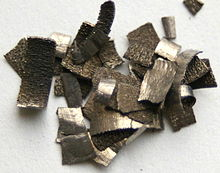

Dysprosium
|  | |||||||||||||||||||||||||||||||||||||||||||||||||||||||||||||||||||||||||||||||||||||||||||||||||||||||||||||||||||||||||||||||||||||||||||||||||||||||||||||||||||||||||||||||||||||||||||||||||||||||||||||||||||||||||||||||||||||
| General properties | |||||||||||||||||||||||||||||||||||||||||||||||||||||||||||||||||||||||||||||||||||||||||||||||||||||||||||||||||||||||||||||||||||||||||||||||||||||||||||||||||||||||||||||||||||||||||||||||||||||||||||||||||||||||||||||||||||||
|---|---|---|---|---|---|---|---|---|---|---|---|---|---|---|---|---|---|---|---|---|---|---|---|---|---|---|---|---|---|---|---|---|---|---|---|---|---|---|---|---|---|---|---|---|---|---|---|---|---|---|---|---|---|---|---|---|---|---|---|---|---|---|---|---|---|---|---|---|---|---|---|---|---|---|---|---|---|---|---|---|---|---|---|---|---|---|---|---|---|---|---|---|---|---|---|---|---|---|---|---|---|---|---|---|---|---|---|---|---|---|---|---|---|---|---|---|---|---|---|---|---|---|---|---|---|---|---|---|---|---|---|---|---|---|---|---|---|---|---|---|---|---|---|---|---|---|---|---|---|---|---|---|---|---|---|---|---|---|---|---|---|---|---|---|---|---|---|---|---|---|---|---|---|---|---|---|---|---|---|---|---|---|---|---|---|---|---|---|---|---|---|---|---|---|---|---|---|---|---|---|---|---|---|---|---|---|---|---|---|---|---|---|---|---|---|---|---|---|---|---|---|---|---|---|---|---|---|---|---|
| Name, symbol | dysprosium, Dy | ||||||||||||||||||||||||||||||||||||||||||||||||||||||||||||||||||||||||||||||||||||||||||||||||||||||||||||||||||||||||||||||||||||||||||||||||||||||||||||||||||||||||||||||||||||||||||||||||||||||||||||||||||||||||||||||||||||
| Pronunciation | /dɪsˈproʊziəm/ dis-PROH-zee-əm |
||||||||||||||||||||||||||||||||||||||||||||||||||||||||||||||||||||||||||||||||||||||||||||||||||||||||||||||||||||||||||||||||||||||||||||||||||||||||||||||||||||||||||||||||||||||||||||||||||||||||||||||||||||||||||||||||||||
| Appearance | silvery white | ||||||||||||||||||||||||||||||||||||||||||||||||||||||||||||||||||||||||||||||||||||||||||||||||||||||||||||||||||||||||||||||||||||||||||||||||||||||||||||||||||||||||||||||||||||||||||||||||||||||||||||||||||||||||||||||||||||
| Dysprosium in the periodic table | |||||||||||||||||||||||||||||||||||||||||||||||||||||||||||||||||||||||||||||||||||||||||||||||||||||||||||||||||||||||||||||||||||||||||||||||||||||||||||||||||||||||||||||||||||||||||||||||||||||||||||||||||||||||||||||||||||||
|
|||||||||||||||||||||||||||||||||||||||||||||||||||||||||||||||||||||||||||||||||||||||||||||||||||||||||||||||||||||||||||||||||||||||||||||||||||||||||||||||||||||||||||||||||||||||||||||||||||||||||||||||||||||||||||||||||||||
| Atomic number | 66 | ||||||||||||||||||||||||||||||||||||||||||||||||||||||||||||||||||||||||||||||||||||||||||||||||||||||||||||||||||||||||||||||||||||||||||||||||||||||||||||||||||||||||||||||||||||||||||||||||||||||||||||||||||||||||||||||||||||
| Standard atomic weight (±) | 162.500(1)[1] | ||||||||||||||||||||||||||||||||||||||||||||||||||||||||||||||||||||||||||||||||||||||||||||||||||||||||||||||||||||||||||||||||||||||||||||||||||||||||||||||||||||||||||||||||||||||||||||||||||||||||||||||||||||||||||||||||||||
| Element category | lanthanide | ||||||||||||||||||||||||||||||||||||||||||||||||||||||||||||||||||||||||||||||||||||||||||||||||||||||||||||||||||||||||||||||||||||||||||||||||||||||||||||||||||||||||||||||||||||||||||||||||||||||||||||||||||||||||||||||||||||
| Group, block | group n/a, f-block | ||||||||||||||||||||||||||||||||||||||||||||||||||||||||||||||||||||||||||||||||||||||||||||||||||||||||||||||||||||||||||||||||||||||||||||||||||||||||||||||||||||||||||||||||||||||||||||||||||||||||||||||||||||||||||||||||||||
| Period | period 6 | ||||||||||||||||||||||||||||||||||||||||||||||||||||||||||||||||||||||||||||||||||||||||||||||||||||||||||||||||||||||||||||||||||||||||||||||||||||||||||||||||||||||||||||||||||||||||||||||||||||||||||||||||||||||||||||||||||||
| Electron configuration | [Xe] 4f10 6s2 | ||||||||||||||||||||||||||||||||||||||||||||||||||||||||||||||||||||||||||||||||||||||||||||||||||||||||||||||||||||||||||||||||||||||||||||||||||||||||||||||||||||||||||||||||||||||||||||||||||||||||||||||||||||||||||||||||||||
| per shell | 2, 8, 18, 28, 8, 2 | ||||||||||||||||||||||||||||||||||||||||||||||||||||||||||||||||||||||||||||||||||||||||||||||||||||||||||||||||||||||||||||||||||||||||||||||||||||||||||||||||||||||||||||||||||||||||||||||||||||||||||||||||||||||||||||||||||||
| Physical properties | |||||||||||||||||||||||||||||||||||||||||||||||||||||||||||||||||||||||||||||||||||||||||||||||||||||||||||||||||||||||||||||||||||||||||||||||||||||||||||||||||||||||||||||||||||||||||||||||||||||||||||||||||||||||||||||||||||||
| Phase | solid | ||||||||||||||||||||||||||||||||||||||||||||||||||||||||||||||||||||||||||||||||||||||||||||||||||||||||||||||||||||||||||||||||||||||||||||||||||||||||||||||||||||||||||||||||||||||||||||||||||||||||||||||||||||||||||||||||||||
| Melting point | 1680 K (1407 °C, 2565 °F) | ||||||||||||||||||||||||||||||||||||||||||||||||||||||||||||||||||||||||||||||||||||||||||||||||||||||||||||||||||||||||||||||||||||||||||||||||||||||||||||||||||||||||||||||||||||||||||||||||||||||||||||||||||||||||||||||||||||
| Boiling point | 2840 K (2562 °C, 4653 °F) | ||||||||||||||||||||||||||||||||||||||||||||||||||||||||||||||||||||||||||||||||||||||||||||||||||||||||||||||||||||||||||||||||||||||||||||||||||||||||||||||||||||||||||||||||||||||||||||||||||||||||||||||||||||||||||||||||||||
| Density near r.t. | 8.540 g·cm−3 | ||||||||||||||||||||||||||||||||||||||||||||||||||||||||||||||||||||||||||||||||||||||||||||||||||||||||||||||||||||||||||||||||||||||||||||||||||||||||||||||||||||||||||||||||||||||||||||||||||||||||||||||||||||||||||||||||||||
| when liquid, at m.p. | 8.37 g·cm−3 | ||||||||||||||||||||||||||||||||||||||||||||||||||||||||||||||||||||||||||||||||||||||||||||||||||||||||||||||||||||||||||||||||||||||||||||||||||||||||||||||||||||||||||||||||||||||||||||||||||||||||||||||||||||||||||||||||||||
| Heat of fusion | 11.06 kJ·mol−1 | ||||||||||||||||||||||||||||||||||||||||||||||||||||||||||||||||||||||||||||||||||||||||||||||||||||||||||||||||||||||||||||||||||||||||||||||||||||||||||||||||||||||||||||||||||||||||||||||||||||||||||||||||||||||||||||||||||||
| Heat of vaporization | 280 kJ·mol−1 | ||||||||||||||||||||||||||||||||||||||||||||||||||||||||||||||||||||||||||||||||||||||||||||||||||||||||||||||||||||||||||||||||||||||||||||||||||||||||||||||||||||||||||||||||||||||||||||||||||||||||||||||||||||||||||||||||||||
| Molar heat capacity | 27.7 J·mol−1·K−1 | ||||||||||||||||||||||||||||||||||||||||||||||||||||||||||||||||||||||||||||||||||||||||||||||||||||||||||||||||||||||||||||||||||||||||||||||||||||||||||||||||||||||||||||||||||||||||||||||||||||||||||||||||||||||||||||||||||||
vapor pressure
|
|||||||||||||||||||||||||||||||||||||||||||||||||||||||||||||||||||||||||||||||||||||||||||||||||||||||||||||||||||||||||||||||||||||||||||||||||||||||||||||||||||||||||||||||||||||||||||||||||||||||||||||||||||||||||||||||||||||
| Atomic properties | |||||||||||||||||||||||||||||||||||||||||||||||||||||||||||||||||||||||||||||||||||||||||||||||||||||||||||||||||||||||||||||||||||||||||||||||||||||||||||||||||||||||||||||||||||||||||||||||||||||||||||||||||||||||||||||||||||||
| Oxidation states | 3, 2, 1 (a weakly basic oxide) | ||||||||||||||||||||||||||||||||||||||||||||||||||||||||||||||||||||||||||||||||||||||||||||||||||||||||||||||||||||||||||||||||||||||||||||||||||||||||||||||||||||||||||||||||||||||||||||||||||||||||||||||||||||||||||||||||||||
| Electronegativity | Pauling scale: 1.22 | ||||||||||||||||||||||||||||||||||||||||||||||||||||||||||||||||||||||||||||||||||||||||||||||||||||||||||||||||||||||||||||||||||||||||||||||||||||||||||||||||||||||||||||||||||||||||||||||||||||||||||||||||||||||||||||||||||||
| Ionization energies | 1st: 573.0 kJ·mol−1 2nd: 1130 kJ·mol−1 3rd: 2200 kJ·mol−1 |
||||||||||||||||||||||||||||||||||||||||||||||||||||||||||||||||||||||||||||||||||||||||||||||||||||||||||||||||||||||||||||||||||||||||||||||||||||||||||||||||||||||||||||||||||||||||||||||||||||||||||||||||||||||||||||||||||||
| Atomic radius | empirical: 178 pm | ||||||||||||||||||||||||||||||||||||||||||||||||||||||||||||||||||||||||||||||||||||||||||||||||||||||||||||||||||||||||||||||||||||||||||||||||||||||||||||||||||||||||||||||||||||||||||||||||||||||||||||||||||||||||||||||||||||
| Covalent radius | 192±7 pm | ||||||||||||||||||||||||||||||||||||||||||||||||||||||||||||||||||||||||||||||||||||||||||||||||||||||||||||||||||||||||||||||||||||||||||||||||||||||||||||||||||||||||||||||||||||||||||||||||||||||||||||||||||||||||||||||||||||
| Miscellanea | |||||||||||||||||||||||||||||||||||||||||||||||||||||||||||||||||||||||||||||||||||||||||||||||||||||||||||||||||||||||||||||||||||||||||||||||||||||||||||||||||||||||||||||||||||||||||||||||||||||||||||||||||||||||||||||||||||||
| Crystal structure | hexagonal close-packed (hcp)
|
||||||||||||||||||||||||||||||||||||||||||||||||||||||||||||||||||||||||||||||||||||||||||||||||||||||||||||||||||||||||||||||||||||||||||||||||||||||||||||||||||||||||||||||||||||||||||||||||||||||||||||||||||||||||||||||||||||
| Speed of sound thin rod | 2710 m·s−1 (at 20 °C) | ||||||||||||||||||||||||||||||||||||||||||||||||||||||||||||||||||||||||||||||||||||||||||||||||||||||||||||||||||||||||||||||||||||||||||||||||||||||||||||||||||||||||||||||||||||||||||||||||||||||||||||||||||||||||||||||||||||
| Thermal expansion | α, poly: 9.9 µm·m−1·K−1 (r.t.) | ||||||||||||||||||||||||||||||||||||||||||||||||||||||||||||||||||||||||||||||||||||||||||||||||||||||||||||||||||||||||||||||||||||||||||||||||||||||||||||||||||||||||||||||||||||||||||||||||||||||||||||||||||||||||||||||||||||
| Thermal conductivity | 10.7 W·m−1·K−1 | ||||||||||||||||||||||||||||||||||||||||||||||||||||||||||||||||||||||||||||||||||||||||||||||||||||||||||||||||||||||||||||||||||||||||||||||||||||||||||||||||||||||||||||||||||||||||||||||||||||||||||||||||||||||||||||||||||||
| Electrical resistivity | α, poly: 926 nΩ·m (r.t.) | ||||||||||||||||||||||||||||||||||||||||||||||||||||||||||||||||||||||||||||||||||||||||||||||||||||||||||||||||||||||||||||||||||||||||||||||||||||||||||||||||||||||||||||||||||||||||||||||||||||||||||||||||||||||||||||||||||||
| Magnetic ordering | paramagnetic at 300 K | ||||||||||||||||||||||||||||||||||||||||||||||||||||||||||||||||||||||||||||||||||||||||||||||||||||||||||||||||||||||||||||||||||||||||||||||||||||||||||||||||||||||||||||||||||||||||||||||||||||||||||||||||||||||||||||||||||||
| Young's modulus | α form: 61.4 GPa | ||||||||||||||||||||||||||||||||||||||||||||||||||||||||||||||||||||||||||||||||||||||||||||||||||||||||||||||||||||||||||||||||||||||||||||||||||||||||||||||||||||||||||||||||||||||||||||||||||||||||||||||||||||||||||||||||||||
| Shear modulus | α form: 24.7 GPa | ||||||||||||||||||||||||||||||||||||||||||||||||||||||||||||||||||||||||||||||||||||||||||||||||||||||||||||||||||||||||||||||||||||||||||||||||||||||||||||||||||||||||||||||||||||||||||||||||||||||||||||||||||||||||||||||||||||
| Bulk modulus | α form: 40.5 GPa | ||||||||||||||||||||||||||||||||||||||||||||||||||||||||||||||||||||||||||||||||||||||||||||||||||||||||||||||||||||||||||||||||||||||||||||||||||||||||||||||||||||||||||||||||||||||||||||||||||||||||||||||||||||||||||||||||||||
| Poisson ratio | α form: 0.247 | ||||||||||||||||||||||||||||||||||||||||||||||||||||||||||||||||||||||||||||||||||||||||||||||||||||||||||||||||||||||||||||||||||||||||||||||||||||||||||||||||||||||||||||||||||||||||||||||||||||||||||||||||||||||||||||||||||||
| Vickers hardness | 410–550 MPa | ||||||||||||||||||||||||||||||||||||||||||||||||||||||||||||||||||||||||||||||||||||||||||||||||||||||||||||||||||||||||||||||||||||||||||||||||||||||||||||||||||||||||||||||||||||||||||||||||||||||||||||||||||||||||||||||||||||
| Brinell hardness | 500–1050 MPa | ||||||||||||||||||||||||||||||||||||||||||||||||||||||||||||||||||||||||||||||||||||||||||||||||||||||||||||||||||||||||||||||||||||||||||||||||||||||||||||||||||||||||||||||||||||||||||||||||||||||||||||||||||||||||||||||||||||
| CAS Registry Number | 7429-91-6 | ||||||||||||||||||||||||||||||||||||||||||||||||||||||||||||||||||||||||||||||||||||||||||||||||||||||||||||||||||||||||||||||||||||||||||||||||||||||||||||||||||||||||||||||||||||||||||||||||||||||||||||||||||||||||||||||||||||
| History | |||||||||||||||||||||||||||||||||||||||||||||||||||||||||||||||||||||||||||||||||||||||||||||||||||||||||||||||||||||||||||||||||||||||||||||||||||||||||||||||||||||||||||||||||||||||||||||||||||||||||||||||||||||||||||||||||||||
| Discovery | Lecoq de Boisbaudran (1886) | ||||||||||||||||||||||||||||||||||||||||||||||||||||||||||||||||||||||||||||||||||||||||||||||||||||||||||||||||||||||||||||||||||||||||||||||||||||||||||||||||||||||||||||||||||||||||||||||||||||||||||||||||||||||||||||||||||||
| Most stable isotopes | |||||||||||||||||||||||||||||||||||||||||||||||||||||||||||||||||||||||||||||||||||||||||||||||||||||||||||||||||||||||||||||||||||||||||||||||||||||||||||||||||||||||||||||||||||||||||||||||||||||||||||||||||||||||||||||||||||||
|
|||||||||||||||||||||||||||||||||||||||||||||||||||||||||||||||||||||||||||||||||||||||||||||||||||||||||||||||||||||||||||||||||||||||||||||||||||||||||||||||||||||||||||||||||||||||||||||||||||||||||||||||||||||||||||||||||||||
| Decay modes in parentheses are predicted, but have not yet been observed | |||||||||||||||||||||||||||||||||||||||||||||||||||||||||||||||||||||||||||||||||||||||||||||||||||||||||||||||||||||||||||||||||||||||||||||||||||||||||||||||||||||||||||||||||||||||||||||||||||||||||||||||||||||||||||||||||||||
{kind=link}
Dysprosium is a chemical element with symbol Dy and atomic number 66. It is a rare earth element with a metallic silver luster. Dysprosium is never found in nature as a free element, though it is found in various minerals, such as xenotime. Naturally occurring dysprosium is composed of 7 isotopes, the most abundant of which is 164Dy.
Dysprosium was first identified in 1886 by Paul Émile Lecoq de Boisbaudran, but was not isolated in pure form until the development of ion exchange techniques in the 1950s. Dysprosium is used for its high thermal neutron absorption cross-section in making control rods in nuclear reactors, for its high magnetic susceptibility in data storage applications, and as a component of Terfenol-D. Soluble dysprosium salts are mildly toxic, while the insoluble salts are considered non-toxic.
Contents
[hide]Characteristics[edit]
Physical properties[edit]
{kind=link}
Dysprosium is a rare earth element that has a metallic, bright silver luster. It is soft enough to be cut with a knife, and can be machined without sparking if overheating is avoided. Dysprosium's physical characteristics can be greatly affected, even by small amounts of impurities.[2]
Dysprosium and holmium have the highest magnetic strengths of the elements,[3] especially at low temperatures.[4] Dysprosium has a simple ferromagnetic ordering at temperatures below 85 K (−188.2 °C). Above 85 K (−188.2 °C), it turns into an helical antiferromagnetic state in which all of the atomic moments in a particular basal plane layer are parallel, and oriented at a fixed angle to the moments of adjacent layers. This unusual antiferromagnetism transforms into a disordered (paramagnetic) state at 179 K (−94 °C).[5]
Chemical properties[edit]
Dysprosium metal tarnishes slowly in air and burns readily to form dysprosium(III) oxide:
- 4 Dy + 3 O2 → 2 Dy2O3
Dysprosium is quite electropositive and reacts slowly with cold water and quite quickly with hot water to form dysprosium hydroxide:
- 2 Dy (s) + 6 H2O (l) → 2 Dy(OH)3 (aq) + 3 H2 (g)
Dysprosium metal vigorously reacts with all the halogens at above 200 °C:
- 2 Dy (s) + 3 F2 (g) → 2 DyF3 (s) [green]
- 2 Dy (s) + 3 Cl2 (g) → 2 DyCl3 (s) [white]
- 2 Dy (s) + 3 Br2 (g) → 2 DyBr3 (s) [white]
- 2 Dy (s) + 3 I2 (g) → 2 DyI3 (s) [green]
Dysprosium dissolves readily in dilute sulfuric acid to form solutions containing the yellow Dy(III) ions, which exist as a [Dy(OH2)9]3+ complexes:[6]
- 2 Dy (s) + 3 H2SO4 (aq) → 2 Dy3+ (aq) + 3 SO2−
4 (aq) + 3 H2 (g)
The resulting compound, dysprosium(III) sulfate, is noticeably paramagnetic.
Compounds[edit]
{kind=link}
Dysprosium halides, such as DyF3 and DyBr3, tend to take on a yellow color. Dysprosium oxide, also known as dysprosia, is a white powder that is highly magnetic, more so than iron oxide.[4]
Dysprosium combines with various non-metals at high temperatures to form binary compounds with varying composition and oxidation states +3 and sometimes +2, such as DyN, DyP, DyH2 and DyH3; DyS, DyS2, Dy2S3 and Dy5S7; DyB2, DyB4, DyB6 and DyB12, as well as Dy3C and Dy2C3.[7]
Dysprosium carbonate, Dy2(CO3)3, and dysprosium sulfate, Dy2(SO4)3, result from similar reactions.[8] Most dysprosium compounds are soluble in water, though dysprosium carbonate tetrahydrate (Dy2(CO3)3·4H2O) and dysprosium oxalate decahydrate (Dy2(C2O4)3·10H2O) are both insoluble in water.[9][10] Two of the most abundant dysprosium carbonates, tengerite-(Dy) (Dy2(CO3)3·2–3H2O) and kozoite-(Dy) (DyCO3(OH)) are known to form via a poorly ordered (amorphous) precursor phase with a formula of Dy2(CO3)3·4H2O. This amorphous precursor consists of highly hydrated spherical nanoparticles of 10–20 nm diameter that are exceptionally stable under dry treatment at ambient and high temperatures.[11]
Isotopes[edit]
Naturally occurring dysprosium is composed of 7 isotopes: 156Dy, 158Dy, 160Dy, 161Dy, 162Dy, 163Dy, and 164Dy. These are all considered stable, although 156Dy decays by alpha decay with a half-life of over 1×1018 years. Of the naturally occurring isotopes, 164Dy is the most abundant at 28%, followed by 162Dy at 26%. The least abundant is 156Dy at 0.06%.[12]
Twenty-nine radioisotopes have also been synthesized, ranging in atomic mass from 138 to 173. The most stable of these is 154Dy with a half-life of approximately 3×106 years, followed by 159Dy with a half-life of 144.4 days. The least stable is 138Dy with a half-life of 200 ms. Isotopes that are lighter than the stable isotopes tend to decay primarily by β+ decay, while those that are heavier tend to decay by β− decay, with some exceptions. 154Dy decays primarily by alpha decay, and 152Dy and 159Dy decay primarily by electron capture.[12] Dysprosium also has at least 11 metastable isomers, ranging in atomic mass from 140 to 165. The most stable of these is 165mDy, which has a half-life of 1.257 minutes. 149Dy has two metastable isomers, the second of which, 149m2Dy, has a half-life of 28 ns.[12]
History[edit]
In 1878, erbium ores were found to contain the oxides of holmium and thulium. French chemist Paul Émile Lecoq de Boisbaudran, while working with holmium oxide, separated dysprosium oxide from it in Paris in 1886.[13] His procedure for isolating the dysprosium involved dissolving dysprosium oxide in acid, then adding ammonia to precipitate the hydroxide. He was only able to isolate dysprosium from its oxide after more than 30 attempts at his procedure. Upon succeeding, he named the element dysprosium from the Greek dysprositos (δυσπρόσιτος), meaning "hard to get". However, the element was not isolated in relatively pure form until after the development of ion exchange techniques by Frank Spedding at Iowa State University in the early 1950s.[3]
In 1950, Glenn T. Seaborg, Albert Ghiorso, and Stanley G. Thompson bombarded 241Am with helium ions, which produced atoms with an atomic number of 97 and which closely resembled the neighboring lanthanide terbium. Because terbium was named after Ytterby, the city in which it and several other elements were discovered, this new element was named berkelium for the city in which it was synthesized. However, when the research team synthesized element 98, they could not think of a good analogy for dysprosium, and instead named the element californium in honor of the state in which it was synthesized, California. The research team went on to "point out that, in recognition of the fact that dysprosium is named on the basis of a Greek word meaning 'difficult to get at,' that the searchers for another element a century ago found it difficult to get to California."[14]
Occurrence[edit]
{kind=link}
Dysprosium is never encountered as a free element, but is found in many minerals, including xenotime, fergusonite, gadolinite, euxenite, polycrase, blomstrandine, monazite and bastnäsite; often with erbium and holmium or other rare earth elements. Currently, most dysprosium is being obtained from the ion-adsorption clay ores of southern China,[15] and future sources will include the Halls Creek region in Western Australia.[16] In the high-yttrium version of these, dysprosium happens to be the most abundant of the heavy lanthanides, comprising up to 7–8% of the concentrate (as compared to about 65% for yttrium).[17][18] The concentration of Dy in the Earth crust is about 5.2 mg/kg and in sea water 0.9 ng/L.[7]
Production[edit]
Dysprosium is obtained primarily from monazite sand, a mixture of various phosphates. The metal is obtained as a by-product in the commercial extraction of yttrium. In isolating dysprosium, most of the unwanted metals can be removed magnetically or by a flotation process. Dysprosium can then be separated from other rare earth metals by an ion exchange displacement process. The resulting dysprosium ions can then react with either fluorine or chlorine to form dysprosium fluoride, DyF3, or dysprosium chloride, DyCl3. These compounds can be reduced using either calcium or lithium metals in the following reactions:[8]
- 3 Ca + 2 DyF3 → 2 Dy + 3 CaF2
- 3 Li + DyCl3 → Dy + 3 LiCl
The components are placed in a tantalum crucible and fired in a helium atmosphere. As the reaction progresses, the resulting halide compounds and molten dysprosium separate due to differences in density. When the mixture cools, the dysprosium can be cut away from the impurities.[8]
About 100 tonnes of dysprosium are produced worldwide each year,[19] with 99% of that total produced in China.[20] Dysprosium prices have climbed nearly twentyfold, from $7 per pound in 2003, to $130 a pound in late 2010.[20] According to the United States Department of Energy, the wide range of its current and projected uses, together with the lack of any immediately suitable replacement, makes dysprosium the single most critical element for emerging clean energy technologies - even their most conservative projections predict a shortfall of dysprosium before 2015.[21]
Applications[edit]
There are not many applications unique to dysprosium. Theodore Gray wrote in his book The Elements: A Visual Exploration of Every Known Atom in the Universe "Look up dysprosium, and you have to go to the fourth page of results before finding anything that isn't a periodic table website's entry for dysprosium, usually an obligatory 'It's an element, so we have to have a page about it' sort of page."
Dysprosium is used, in conjunction with vanadium and other elements, in making laser materials and commercial lighting. Because of dysprosium's high thermal-neutron absorption cross-section, dysprosium-oxide–nickel cermets are used in neutron-absorbing control rods in nuclear reactors.[3][22] Dysprosium–cadmium chalcogenides are sources of infrared radiation, which is useful for studying chemical reactions.[2] Because dysprosium and its compounds are highly susceptible to magnetization, they are employed in various data-storage applications, such as in hard disks.[23]
Neodymium–iron–boron magnets can have up to 6% of the neodymium substituted with dysprosium[24] to raise the coercivity for demanding applications such as drive motors for electric vehicles. This substitution would require up to 100 grams of dysprosium per car produced. Based on Toyota's projected 2 million units per year, the use of dysprosium in applications such as this would quickly exhaust its available supply.[25] The dysprosium substitution may also be useful in other applications, because it improves the corrosion resistance of the magnets.[26]
Dysprosium is one of the components of Terfenol-D, along with iron and terbium. Terfenol-D has the highest room-temperature magnetostriction of any known material;[27] which is employed in transducers, wide-band mechanical resonators,[28] and high-precision liquid-fuel injectors.[29]
Dysprosium is used in dosimeters for measuring ionizing radiation. Crystals of calcium sulfate or calcium fluoride are doped with dysprosium. When these crystals are exposed to radiation, the dysprosium atoms become excited and luminescent. The luminescence can be measured to determine the degree of exposure to which the dosimeter has been subjected.[3]
Nanofibers of dysprosium compounds have high strength and large surface area. Therefore, they can be used to reinforce other materials and as a catalyst. Fibers of dysprosium oxide fluoride can be produced by heating an aqueous solution of DyBr3 and NaF to 450 °C at 450 bar for 17 hours. This material is remarkably robust, surviving over 100 hours in various aqueous solutions at temperatures exceeding 400 °C without redissolving or aggregating.[30][31][32]
Dysprosium iodide and dysprosium bromide are used in high-intensity metal-halide lamps. These compounds dissociate near the hot center of the lamp, releasing isolated dysprosium atoms. The latter re-emit light in the green and red part of the spectrum, thereby effectively producing bright light.[3][33]
Several paramagnetic crystal salts of dysprosium (Dysprosium Gallium Garnet, DGG; Dysprosium Aluminum Garnet, DAG; Dysprosium Iron Garnet, DyIG) are used in adiabatic demagnetization refrigerators.[34][35]
Precautions[edit]
Like many powders, dysprosium powder may present an explosion hazard when mixed with air and when an ignition source is present. Thin foils of the substance can also be ignited by sparks or by static electricity. Dysprosium fires cannot be put out by water. It can react with water to produce flammable hydrogen gas.[36] Dysprosium chloride fires, however, can be extinguished with water,[37] while dysprosium fluoride and dysprosium oxide are non-flammable.[38][39] Dysprosium nitrate, Dy(NO3)3, is a strong oxidizing agent and will readily ignite upon contact with organic substances.[4]
Soluble dysprosium salts, such as dysprosium chloride and dysprosium nitrate, are mildly toxic when ingested. The insoluble salts, however, are non-toxic. Based on the toxicity of dysprosium chloride to mice, it is estimated that the ingestion of 500 grams or more could be fatal to a human.[3]
See also[edit]
References[edit]
- Jump up ^ Standard Atomic Weights 2013. Commission on Isotopic Abundances and Atomic Weights
- ^ Jump up to: a b Lide, David R., ed. (2007–2008). "Dysprosium". CRC Handbook of Chemistry and Physics 4. New York: CRC Press. p. 11. ISBN 978-0-8493-0488-0.
- ^ Jump up to: a b c d e f Emsley, John (2001). Nature's Building Blocks. Oxford: Oxford University Press. pp. 129–132. ISBN 0-19-850341-5.
- ^ Jump up to: a b c Krebs, Robert E. (1998). "Dysprosium". The History and Use of our Earth's Chemical Elements. Greenwood Press. pp. 234–235. ISBN 0-313-30123-9.
- Jump up ^ Jackson, Mike (2000). "Wherefore Gadolinium? Magnetism of the Rare Earths" (PDF). IRM Quarterly (Institute for Rock Magnetism) 10 (3): 6.
- Jump up ^ "Chemical reactions of Dysprosium". Webelements. Retrieved 2012-08-16.
- ^ Jump up to: a b Patnaik, Pradyot (2003). Handbook of Inorganic Chemical Compounds. McGraw-Hill. pp. 289–290. ISBN 0-07-049439-8. Retrieved 2009-06-06.
- ^ Jump up to: a b c Heiserman, David L. (1992). Exploring Chemical Elements and their Compounds. TAB Books. pp. 236–238. ISBN 0-8306-3018-X.
- Jump up ^ Perry, D. L. (1995). Handbook of Inorganic Compounds. CRC Press. pp. 152–154. ISBN 0-8493-8671-3.
- Jump up ^ Jantsch, G.; Ohl, A. (1911). "Zur Kenntnis der Verbindungen des Dysprosiums". Berichte der deutschen chemischen Gesellschaft 44 (2): 1274–1280. doi:10.1002/cber.19110440215.
- Jump up ^ Vallina, B., Rodriguez-Blanco, J.D., Brown, A.P., Blanco, J.A. and Benning, L.G. (2013) Amorphous dysprosium carbonate: characterization, stability and crystallization pathways. Journal of Nanoparticle Research, 15, 1438. doi: 10.1007/s11051-013-1438-3
- ^ Jump up to: a b c Audi, G.; Bersillon, O.; Blachot, J.; Wapstra, A.H. (2003). "Nubase2003 Evaluation of Nuclear and Decay Properties". Nuclear Physics A (Atomic Mass Data Center) 729: 3–128. Bibcode:2003NuPhA.729....3A. doi:10.1016/j.nuclphysa.2003.11.001.
- Jump up ^ Paul Émile Lecoq de Boisbaudran (1886). "L'holmine (ou terre X de M Soret) contient au moins deux radicaux métallique (Holminia contains at least two metal)". Comptes Rendus (in French) 143: 1003–1006.
- Jump up ^ Weeks, M. E. (1968). Discovery of the Elements (7 ed.). Journal of Chemical Education. pp. 848–849. ISBN 0-8486-8579-2. OCLC 23991202.
- Jump up ^ Bradsher, Keith (December 25, 2009). "Earth-Friendly Elements, Mined Destructively". The New York Times.
- Jump up ^ Brann, Matt (November 27, 2011). "Halls Creek turning into a hub for rare earths".
- Jump up ^ Naumov, A. V. (2008). "Review of the World Market of Rare-Earth Metals". Russian Journal of Non-Ferrous Metals 49 (1): 14–22. doi:10.1007/s11981-008-1004-6.
- Jump up ^ Gupta, C. K.; Krishnamurthy N. (2005). Extractive Metallurgy of Rare Earths. CRC Press. ISBN 978-0-415-33340-5.
- Jump up ^ "Dysprosium (Dy) - Chemical properties, Health and Environmental effects". Lenntech Water treatment & air purification Holding B.V. 2008. Retrieved 2009-06-02.
- ^ Jump up to: a b Bradsher, Keith (December 29, 2010). "In China, Illegal Rare Earth Mines Face Crackdown". The New York Times.
- Jump up ^ New Scientist, 18 June 2011, p. 40
- Jump up ^ Amit, Sinha; Sharma, Beant Prakash (2005). "Development of Dysprosium Titanate Based Ceramics". Journal of the American Ceramic Society 88 (4): 1064–1066. doi:10.1111/j.1551-2916.2005.00211.x.
- Jump up ^ Lagowski, J. J., ed. (2004). Chemistry Foundations and Applications 2. Thomson Gale. pp. 267–268. ISBN 0-02-865724-1.
- Jump up ^ Shi, Fang, X.; Shi, Y.; Jiles, D.C. (1998). "Modeling of magnetic properties of heat treated Dy-doped NdFeBparticles bonded in isotropic and anisotropic arrangements". IEEE Transactions on Magnetics 34 (4): 1291–1293. Bibcode:1998ITM....34.1291F. doi:10.1109/20.706525.
- Jump up ^ Campbell, Peter (February 2008). "Supply and Demand, Part 2". Princeton Electro-Technology, Inc. Archived from the original on June 4, 2008. Retrieved 2008-11-09.
- Jump up ^ Yu, L. Q.; Wen, Y; Yan, M (2004). "Effects of Dy and Nb on the magnetic properties and corrosion resistance of sintered NdFeB". Journal of Magnetism and Magnetic Materials 283 (2–3): 353–356. Bibcode:2004JMMM..283..353Y. doi:10.1016/j.jmmm.2004.06.006.
- Jump up ^ "What is Terfenol-D?". ETREMA Products, Inc. 2003. Retrieved 2008-11-06.
- Jump up ^ Kellogg, Rick; Flatau, Alison (May 2004). "Wide Band Tunable Mechanical Resonator Employing the ΔE Effect of Terfenol-D". Journal of Intelligent Material Systems & Structures (Sage Publications, Ltd) 15 (5): 355–368. doi:10.1177/1045389X04040649.
- Jump up ^ Leavitt, Wendy (February 2000). "Take Terfenol-D and call me". Fleet Owner (RODI Power Systems Inc) 95 (2): 97. Retrieved 2008-11-06.
- Jump up ^ "Supercritical Water Oxidation/Synthesis". Pacific Northwest National Laboratory. Archived from the original on 2008-04-20. Retrieved 2009-06-06.
- Jump up ^ "Rare Earth Oxide Fluoride: Ceramic Nano-particles via a Hydrothermal Method". Pacific Northwest National Laboratory. Retrieved 2009-06-06.
- Jump up ^ M.M. Hoffman, J.S. Young, J.L. Fulton (2000). "Unusual dysprosium ceramic nano-fiber growth in a supercritical aqueous solution". J Mat. Sci. 35 (16): 4177. Bibcode:2000JMatS..35.4177H. doi:10.1023/A:1004875413406.
- Jump up ^ Theodore Gray (2009). The Elements. Black Dog and Leventhal Publishers. pp. 152–153. ISBN 978-1-57912-814-2.
- Jump up ^ Steve Milward, Stephen Harrison, Robin Stafford Allen, Ian Hepburn, and Christine Brockley-Blatt (2004). "Design, Manufacture and Test of an Adiabatic Demagnetization Refrigerator Magnet for use in Space" http://www.ucl.ac.uk/mssl/cryogenics/documents/5LH01.pdf
- Jump up ^ Ian Hepburn (). "Adiabatic Demagnetization Refrigerator: A Practical Point of View" 30. http://www.ucl.ac.uk/mssl/cryogenics/documents/ADR_presentation__Compatibility_Mode_.pdf
- Jump up ^ Dierks, Steve (January 2003). "Dysprosium". Material Safety Data Sheets. Electronic Space Products International. Retrieved 2008-10-20.
- Jump up ^ Dierks, Steve (January 1995). "Dysprosium Chloride". Material Safety Data Sheets. Electronic Space Products International. Retrieved 2008-11-07.
- Jump up ^ Dierks, Steve (December 1995). "Dysprosium Fluoride". Material Safety Data Sheets. Electronic Space Products International. Retrieved 2008-11-07.
- Jump up ^ Dierks, Steve (November 1988). "Dysprosium Oxide". Material Safety Data Sheets. Electronic Space Products International. Retrieved 2008-11-07.
External links[edit]
| Wikimedia Commons has media related to Dysprosium. |
| Look up dysprosium in Wiktionary, the free dictionary. |
| [hide] Periodic table (Large cells) | |||||||||||||||||||||||||||||||||
|---|---|---|---|---|---|---|---|---|---|---|---|---|---|---|---|---|---|---|---|---|---|---|---|---|---|---|---|---|---|---|---|---|---|
| 1 | 2 | 3 | 4 | 5 | 6 | 7 | 8 | 9 | 10 | 11 | 12 | 13 | 14 | 15 | 16 | 17 | 18 | ||||||||||||||||
| 1 | H | He | |||||||||||||||||||||||||||||||
| 2 | Li | Be | B | C | N | O | F | Ne | |||||||||||||||||||||||||
| 3 | Na | Mg | Al | Si | P | S | Cl | Ar | |||||||||||||||||||||||||
| 4 | K | Ca | Sc | Ti | V | Cr | Mn | Fe | Co | Ni | Cu | Zn | Ga | Ge | As | Se | Br | Kr | |||||||||||||||
| 5 | Rb | Sr | Y | Zr | Nb | Mo | Tc | Ru | Rh | Pd | Ag | Cd | In | Sn | Sb | Te | I | Xe | |||||||||||||||
| 6 | Cs | Ba | La | Ce | Pr | Nd | Pm | Sm | Eu | Gd | Tb | Dy | Ho | Er | Tm | Yb | Lu | Hf | Ta | W | Re | Os | Ir | Pt | Au | Hg | Tl | Pb | Bi | Po | At | Rn | |
| 7 | Fr | Ra | Ac | Th | Pa | U | Np | Pu | Am | Cm | Bk | Cf | Es | Fm | Md | No | Lr | Rf | Db | Sg | Bh | Hs | Mt | Ds | Rg | Cn | 113 | Fl | 115 | Lv | 117 | 118 | |
|
|
|||||||||||||||||||||||||||||||||
|
||